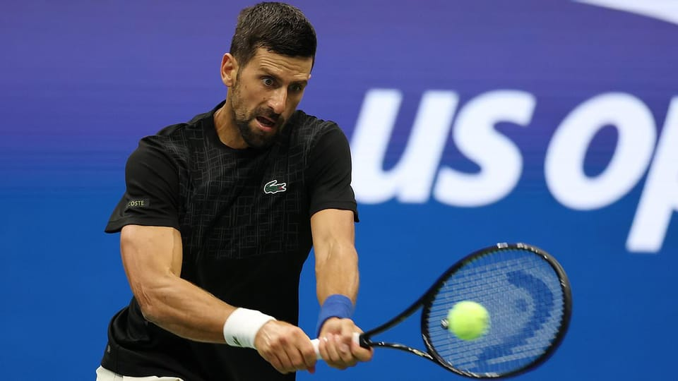

世界苦茶08月23日新闻 | 39条 | 俄罗斯称没有俄乌首脑会面计划

俄罗斯称没有俄乌首脑会面计划 | 美联储释放9月降息预期 | 上合组织峰会在天津召开 | 美国国家情报总监在乌克兰情报上中断盟友分享 | 美国最高院再支持特朗普政策
每日三條新聞解析（模型切换会Gemini）
苦茶数据
美元兑人民币：7.17（昨日7.18，前日7.17）
美元兑日元：146.87（昨日148.70，前日147.38）
上证指数：休市（昨日3825，前日3796）
标普500指数：休市（昨日6466，前日6370）
比特币：115785（昨日113055，前日113693）
布伦特原油：67.73（昨日67.63，前日67.16）
中国新闻
• 上合峰会天津登场中俄印聚焦 ：中国今年关键主场外交活动之一——上海合作组织峰会下星期天于天津登场，20多国领导人将出席，包括印度总理莫迪和俄罗斯总统普京。受访学者指出，中俄印领导人互动将是焦点之一，不排除将举行三边会晤；更多南亚和东南亚国家领袖参会，也体现中国对周边外交的重视。中国外交部星期五宣布，中国国家主席习近平和20多名外国领导人与10名国际组织负责人将出席8月31日至9月1日的2025年上合组织峰会。
• 内蒙古主席王莉霞被查落马 ：中国官方通报，内蒙古自治区政府主席王莉霞涉嫌严重违纪违法，成为今年第三位在任上被调查的省级政府“一把手”，也是被调查的第四位少数民族自治区正部级高官。中共中央纪委国家监委网站星期五通报，王莉霞涉嫌严重违纪违法，目前正接受中央纪委国家监委纪律审查和监察调查。在不到一星期前，王莉霞还曾公开露面。据《内蒙古日报》，巴彦淖尔乌拉特后旗8月16日发生山洪造成人员失联，王莉霞赶赴现场指挥搜救工作。
• 青海铁路桥坍塌致12死4失联 ：中国青海省在黄河上建造的世界最大跨度铁路双线钢桁拱桥，凌晨施工时因绳索断裂发生局部坍塌，造成12人死亡和四人失联，当局仍在搜寻失联工人。据央视新闻报道，位于青海省尖扎县的川青铁路重点工程尖扎黄河特大桥，星期五凌晨3时10分许在施工中钢绞线断裂，截至当天下午6时，已造成12人死亡和四人失联。尖扎县应急管理局值班人员告诉封面新闻，事故导致大桥局部坍塌，并存在二次坍塌风险，遇险工人分散在桥面、桥墩等位置，部分人员掉入黄河水中。
• 福建煤矿事故致7人遇难 ：中国福建省一煤矿发生井下作业人员失联事件，共有七人遇难。据央视新闻报道，福建省大田县广丰矿业有限公司星期四晚上11时许报告，井下有作业人员失联。接报后，救援力量第一时间赶赴现场开展救援。星期五凌晨4时10分，经全力救援，一名伤者自行脱险，七名受困人员全部升井，经现场医务人员确认已无生命体征。
• 山东两市违规发放养老金241万 ：中国山东省通报两市在2022年至2024年间，违规向505名死亡人员发放养老保险待遇，共计241.48万元人民币。⼭东省审计厅7月29日在网站公布政府针对2024年省级预算执⾏和其他财政收⽀的审计报告。报告显示，存在企业缴费不到位、机构违规发放养老金等问题。报告指出，山东一个市12县的159家企业或学校，未按规定为807名在职职⼯缴纳养老保险费。
• 习近平或缺席10月亚细安峰会 ：知情人士称，中国国家主席习近平可能不会出席10月在马来西亚举行的亚细安及系列峰会，意味着外界对他和美国总统特朗普在吉隆坡会晤的期望或将落空。路透社引述两名知情人士报道，曾在5月参加亚细安—中国—海湾阿拉伯国家合作委员会峰会的中国总理李强，预计代表中国出席10月26日至28日在吉隆坡举行的亚细安峰会。马来西亚是亚细安今年的轮值主席国。马国首相安华本月初透露，特朗普和习近平料将出席亚细安峰会。这一消息引发外界猜测，处于贸易休战僵局的美中两国领导人，可能在峰会上实现特朗普第二任期的首次面对面会晤。 （翻評：現在習主席基本是——只打主場，你說這是自信還是不自信呢？）
• 工信部要求稀土企业建流向制度 ：中国工业和信息化部等多部门发文，要求稀土生产企业建立稀土产品流向记录制度。中国工业和信息化部、中国发展改革委和自然资源部星期五发布《稀土开采和稀土冶炼分离总量调控管理暂行办法》。暂行办法指出，稀土生产企业应当建立稀土产品流向记录制度，如实记录稀土产品流向信息，并于每月10日前将上月度稀土产品流向信息录入工业和信息化部会同有关部门建立的稀土产品追溯信息系统。
• 报告称中国上半年碳排放下降1% ：研究报告指出，由于可再生能源发电比例上升，中国今年上半年的二氧化碳排放量同比下降1%。据路透社报道，位于芬兰赫尔辛基的能源与清洁空气研究中心发布的研究报告显示，作为中国温室气体排放最大来源的电力行业，今年上半年排放量下降3%。研究指出，这主要得益于太阳能发电装机容量的快速扩张，预计2025年将再创新高，使全年碳排放保持下降趋势。 （翻評：發電量大爆，火電依然佔75%，GDP、工業增速、消費增速都是正的，碳排放下降還是個很值得分析的事情。）
• 胡锡进再评武大性骚扰案通报难产 ：前《环球时报》总编辑胡锡进星期五针对武汉大学性骚扰案再度发文透露，相关当事方意见分歧大谈不拢，因此官方一直出不了通报。胡锡进认为，媒体应当介入，把各方分歧向公众讲清楚，以免产生故意阻扰事件处理，或瞒而不报的误解。胡锡进在文章中说，武大图书馆事件直到现在没有明确结果，这让舆论失望。他侧面了解得知，相关当事方意见分歧很大，谈不拢，所以官方一直出不了通报。他说，事情有相当的复杂性，他分析，法院裁定不能认定男生肖明滔针对特定对象实施了性骚扰，驳回女生杨景媛的指控。从肖明滔一家的立场来说，会认为杨景媛的所作所为属于诬告，而武大当初的处分，据说导致肖明滔患上了创伤后应激障碍，所以肖明滔一家除了要求撤销当时的处分，应该还会要求武大和杨景媛都正式道歉，直至经济赔偿。
• 美海军水兵因涉华间谍罪被判 ：美国司法部披露，美国海军一名水兵因涉嫌向中国出卖军事机密，被法院裁定从事间谍活动。据法新社报道，这名水兵名为魏锦超，是两栖攻击舰“埃塞克斯号”上的机械师。他与另一名水兵赵文恒在2023年8月被捕，并被控替中国从事间谍活动。美国联邦调查局反间谍处负责人罗扎夫斯基透露，魏锦超曾向中国情报人员提供包括舰艇照片与视频、舰艇调动情况、技术手册以及武器性能等情报，并因此获得1.2万美元的酬劳。
• 国务院常务会议审议三北工程规划 ：8月22日的国务院常务会议，听取“两新”国补汇报，要求认真总结评估，加强统筹协调，完善实施机制，严厉打击套补。进一步强化财税金融政策支持，创新消费投资场景，优化消费投资环境。研究《释放体育消费潜力进一步推进体育产业高质量发展的意见》。审议通过《“三北”工程总体规划》。部署开展海洋渔船安全生产专项整治。
• 参与波音787与空客A380设计的顶尖工程师周明已离开美国回到中国： 这位工业软件专家将加入新成立的宁波东方理工大学，出任工程学院院长。周明以主导用于波音787、空客A380等机型的关键工业软件而闻名，他已从总部位于美国的全球工程巨头Altair的领导岗位离任回国。宁波东方理工大学工程学院网站发布的公告称，周明已于6月受聘为讲席教授并担任首任院长，且正着手组建科研团队。周明亦在其个人社交媒体上证实此事并表示：“我很兴奋能推进面向全球挑战的前沿研究，同时激励下一代技术创新者。能够参与一个远超个人的使命，令人倍感振奋。”
亚太印太新闻
• 韩日首脑会晤李在明首访东京 ：韩国总统李在明星期六访问东京，与日本首相石破茂举行首脑峰会，将打破韩国领导人上任后先访美后访日的惯例。观察家指出，美国关税政策、美国要求日韩承担更多国防开销和朝鲜半岛安全问题是日韩共同面对的挑战，促使两国务实地进一步靠拢，强化合作稳定产业供应链，同时展现应对区域安全威胁的协调姿态。李在明早前公开表明，将尊重和履行前总统朴槿惠政府与前总统尹锡悦政府为解决韩日历史问题而达成的多项协议，显示他确立“历史与未来分轨”的对日外交政策基调。李在明星期二接受日本《读卖新闻》采访时说：“虽然这些协议令国民难以接受，但毕竟是国家间的约定，不宜推翻。”
• 台湾内阁将于8月23日改组 ：台湾媒体报道，执政的民进党政府预计在8月23日第二波罢免投票后，启动新一波人事调整。总统府副秘书长张惇涵将接任行政院秘书长，经济部长将由有财经背景的行政院秘书长龚明鑫出任。综合台湾《自由时报》、中时新闻网和ETtoday新闻云等报道，据了解，由于目前正值美国对等关税谈判期间，为因应新一波政经变局，台行政院将调整财经阁员。卓荣泰和郑丽君将分别留任行政院正副院长，具财经专长的行政院秘书长龚明鑫拟转任经济部长。龚明鑫所留下的空缺将由总统府副秘书长张惇涵填补。
• 菲澳推动新防务协议深化合作 ：菲律宾与澳大利亚国防部长称，两国正推动一项新的防务协议，预计明年签署。此举旨在深化军事合作，应对印太地区日益严峻的安全挑战。路透社报道，菲律宾国防部长特奥多罗星期五在联合记者会上指出，这项协议将为更频繁的联合军演提供制度保障，提升双方联合作战能力，并增强地区威慑力。正在马尼拉访问的澳洲国防部长马尔斯补充说，协议还将支持在菲律宾建设防务基础设施，涉及五个项目地点，但未披露具体细节。
• 台湾网红馆长成功开设抖音账号 ：台湾网红“馆长”成功开设抖音账号并通过实名认证，目前粉丝数已突破九万。馆长星期五在脸书发布截图，显示名为“馆长”的抖音账号已注册成功并通过实名认证。目前，账号已发布两则内容。一则是一张自拍照，配文写道“不要追我号、追踪本号者会有没有女朋友的诅咒，勿追感谢”；另一则是一张人工智能合成的肌肉猫图片，并配文“这我养的猫，就这样”。
科技新闻
• 特朗普称美国买家欲收购TikTok ：美国总统特朗普说，已有美国买家有意收购短视频应用TikTok；如有必要，他可能会进一步延长中国字节跳动剥离TikTok美国资产的最后期限。他同时强调，不认为TikTok存在隐私或安全风险。路透社报道，特朗普星期五接受记者采访时补充说，他目前尚未就这款短视频应用与中国国家主席习近平进行沟通，但将在合适的时机谈及此事。
• 谷歌与Meta签百亿美元云计算协议 ：谷歌近期据报已和脸书母公司Meta新签下一笔云计算协议，时长为六年，总金额或超100亿美元。据路透社援引不具名的知情人士消息，在这个协议下，Meta将使用谷歌云的服务器、存储和网络等和其他服务。Meta和谷歌均没有立即回复路透社的置评请求。今年7月，Meta的创始人兼总裁扎克伯格就曾宣称要斥资数千亿美元，用于建设多座大型人工智能数据中心。Meta上个月还把资本支出的指引下限上调了20亿美元，至660亿到720亿美元区间。
• 苹果或采用谷歌Gemini升级Siri ：苹果正与谷歌进行初步谈判，考虑采用后者的Gemini人工智能模型，以全面升级旗下语音助手 Siri 。据知情人士透露，苹果最近与谷歌接洽，探讨打造一个定制的AI模型，该模型将作为明年新版 Siri 的基础。此举一旦落地，将标志着这家科技巨头首次把核心AI能力大规模外包。不过，苹果距离最终拍板仍需数周时间，目前尚未决定是坚持使用自研模型，还是转向外部合作方。知情人士表示，谷歌已经着手训练可在苹果服务器上运行的定制模型。今年早些时候，苹果还曾探索与 Anthropic或OpenAI合作，评估Claude或ChatGPT是否能成为Siri的“新大脑”。
• 韩国总统称AI投资为政策首要任务 ：韩国总统李在明周五表示，将把人工智能领域的投资列为该国政策的首要重点，并强调积极的财政政策立场。韩国总统李在明周五在电视讲话中表示，政府计划在2026年将相关研究支出增加近五分之一，达到创纪录的35.3万亿韩元，以帮助推动人工智能技术的发展。同一日，韩国财政部详细说明道，在李在明政府实施的首个两年期经济政策规划中，将从2025年下半年开始，将推出针对30个重大人工智能及创新项目的政策方案，包括用于机器人、汽车、船舶、家用电器、无人机、工厂和芯片的人工智能技术，以及诸如“韩妆”和“韩食”之类的先进文化产品。
• 中方回应英伟达暂停生产H20晶片 ：美国科技巨头英伟达据报下令暂停生产H20晶片，中国外交部星期五回应说，各方各国都应当共同维护全球产供链的稳定畅通。有记者在中国外交部例行记者会上提问时说，英伟达已经指示其供应商停止生产与H20晶片相关的产品。此前有报道称，中方不鼓励中国企业使用H20晶片。外交部发言人毛宁回应说，上述问题建议向中方的主管部门了解。作为原则，“我们一贯认为，各方各国都应当共同维护全球产供链的稳定畅通。”
财经新闻
• 发改委等就《互联网平台价格行为规则》征求意见，为期一个月，拟配合《价格法修正草案》实施： 不得变相强制平台内经营者在该平台的商品服务价格不得高于在其他平台的价格。补贴促销不得虚假夸大宣传补贴金额和力度。除降价处理临期或季节性积压商品，或有利于推动创新进步的长期免费商业模式外，不得以低于成本的价格销售商品或服务。
• 美联储或9月降息股债齐涨 ：美国联邦储备委员会主席鲍威尔星期五在杰克逊霍尔年会上释放9月可能降息的信号，市场信心随之提振，美股、债市双双走强。据美国有线电视新闻网在美东时间上午10时18分发布的消息，道琼斯指数上涨680点，涨幅达1.5％；标普500指数升1.3％；以科技股为主的纳斯达克综合指数也上涨1.35％。道指有望创下去年12月4日以来的首次历史新高。同时，美国国债价格上扬，两年期、10年期和30年期美债收益率均明显下滑，反映投资者在降息预期下抢购债券以锁定当前高利率。
• 英特尔同意美政府持股10% ：美国总统特朗普宣布，美国晶片公司英特尔同意给予政府10%的股份。知情人士说，消息即将正式公布。特朗普星期五在白宫对记者说：“他们已经同意了，我认为这对他们来说是笔很好的交易。”特朗普认为这项协议将重振英特尔，指出与晶片制造业的竞争对手相比“英特尔已经落后”，而他在本月与英特尔首席执行官陈立武会面时提出这个想法。预计陈立武星期五将在白宫出席敲定协议的仪式。
• 加拿大将取消部分对美报复关税 ：知情人士透露，加拿大将于当地时间星期五宣布取消对美国商品征收的多项报复性关税。但针对美国汽车、钢铁和铝的关税措施将继续保留。由于事涉敏感，消息源人士要求匿名。路透社报道，加拿大总理卡尼定于美东时间星期五中午12时召开记者会，预计将就此作出正式说明。
• 鲍威尔称美联储9月或考虑降息 ：美国联邦储备委员会主席鲍威尔说，美联储可能在9月会议上考虑降息，但并未明确承诺。他指出，就业市场下行风险加大，同时关税引发的通胀压力仍需谨慎应对。鲍威尔星期五在美联储年度杰克逊霍尔会议上说：“劳动力市场似乎处于平衡，但这种平衡源于供需同步放缓，意味着就业面临的下行风险正在上升，而且一旦出现，可能迅速恶化。”他补充道，关税带来的物价上涨或导致更持久的通胀动力，这同样是必须管理的风险。
• 德国二季度经济萎缩0.3% ：德国联邦统计局公布，第二季度德国经济环比萎缩0.3％，幅度超过此前初步估计的0.1％。分析指出，美国进口商为规避关税曾在此前大举采购德国商品，但这股抢购潮在第二季度消退，需求随之放缓，令德国的复苏前景更加黯淡。路透社报道，德国联邦统计局星期五称，工业产出表现不及预期；家庭消费增幅被下修至0.1％，主要受住宿和餐饮等服务业数据影响。此外，政府支出环比增长0.8％，但投资则大幅下滑1.4％。外贸也未能带来拉动，商品与服务出口环比下降0.1％。
• A股三大指数齐涨沪指破3800点 ：中国A股三大指数星期五震荡上行，沪指涨1.45%突破3800点，再创本轮行情新高，也刷新2015年8月20日以来新高。截至收盘，上证综指报3825.76点；科创50指数涨8.59%，报1247.86点；深证成指涨2.07%，报12166.06点；创业板指涨3.36%，报2682.55点。Wind统计显示，沪深两市及北交所共2802家上涨，2393家下跌，平盘有227家。两市成交25467亿元人民币，较前一交易日的24240亿元增加1227亿元，连续八日成交额破2万亿创历史纪录。
• 加拿大宣布取消多项针对美国的报复性关税： 当地时间周五，加拿大总理卡尼宣布，加拿大政府决定取消多项针对美国商品的报复性关税，将于9月1日生效，但对美国汽车、钢铁和铝的关税将暂时维持。在渥太华的新闻发布会上，卡尼表示，上述措施是与美国对加拿大商品降低关税的对应措施，加拿大将加强与美国方面的接触，以推动达成新的贸易与安全关系。卡尼指出，美国近期已明确表示，不会对符合《美墨加协定》的加拿大商品加征关税，他称这是“一个积极的进展”。 “在这一背景下，并且根据加拿大对 USMCA 的承诺，我今天宣布，加拿大政府将与美国保持一致，取消所有针对美方在USMCA范围内商品的报复性关税。”
俄乌战争
• 拉夫罗夫称俄乌总统暂无会晤计划 ：俄罗斯外长拉夫罗夫说，俄乌总统目前“没有会晤计划”。路透社报道，拉夫罗夫星期五接受美国全国广播公司新闻台采访时强调，俄方并未安排相关会面。他同时指出，总统普京在“峰会议程准备妥当时，随时愿意与乌克兰总统泽连斯基会面”。泽连斯基随后称，俄罗斯正竭尽全力阻止他与普京的会面，并呼吁如果莫斯科不展现结束侵略的意愿，乌克兰盟友应对其实施新一轮制裁。
• 特朗普政府的情报首长在乌克兰问题上将“五眼联盟”盟友排除在外： 美国国家情报总监图尔西·加巴德采取震撼举措，阻止美国最亲密的情报盟友获知俄乌和平谈判的最新进展，颠覆数十年来的紧密合作。这实际上将美国的“五眼”伙伴——英国、加拿大、澳大利亚和新西兰——排除在信息回路之外，令自二战结束以来依赖该网络的情报界震惊。据CBS报道，加巴德于7月20日签署的指令要求美国情报界将所有与俄乌和谈有关的分析与信息定为“NOFORN”，意味着这些信息不得与任何其他国家或外籍人士共享。尽管该指令为外交渠道和向乌克兰提供战场情报设了例外，但它显著地将与世界上最紧密的情报联盟之一——五眼联盟——的信息共享排除在外。 （翻評：這個就是實質性的，親俄的政策。）
• 特朗普称俄乌会晤难如油与醋 ：美国总统特朗普说，要促成乌克兰总统泽连斯基与俄罗斯总统普京会晤，就像让“油和醋融合”一样困难。法新社报道，特朗普星期五在华盛顿对记者指出：“我们会看看普京和泽连斯基是否能坐下来谈一谈。你知道，这有点像油和醋，他们显然相处得并不好。”至于他是否将亲自出席俄乌首脑会晤，他说：“我们拭目以待”。
• 乌军再袭俄输油泵站供应中断 ：乌克兰军方宣布，乌军再次袭击俄罗斯乌涅查输油泵站。这一关键设施是俄友谊输油管向欧洲输送原油的重要节点。匈牙利称，经这条管道输送的原油供应已被迫中断。路透社报道，近几周，俄乌双方不断加大对能源基础设施的攻击。基辅方面接连打击俄境内炼油厂，意在削减俄罗斯的财政收入、扰乱能源出口并制造国内燃料短缺。同时，俄军则以导弹和无人机袭击乌天然气设施，削弱其进口和供应能力，影响民生与军需。友谊管道承担俄罗斯向匈牙利和斯洛伐克输送原油的任务，并将哈萨克斯坦原油输往德国。乌克兰本月已多次针对这条管道设施发动袭击，造成短时供应中断。
国际新闻
• 加沙饥荒严重婴儿急需奶粉 ：加沙的饥饿危机已到临界点。一名三个月大的女婴阿克拉仅重两公斤，不到同龄婴儿的三分之一。她虚弱到无法吮吸，母亲则因饥饿无力产奶。这样的画面，正成为加沙饥荒危机的缩影。联合国儿童基金会称，目前配方奶粉仅能覆盖2500名婴儿，但至少1万名婴儿急需配方奶粉。世卫组织则称，五岁以下营养不良儿童人数在7月接近翻倍，突破1万2000人，其中2500人严重消瘦，随时可能饿死。此外，29万名需要补剂的儿童，但7月只有3％得到救助，远低于此前平均的26％。联合国儿童基金会透露，特殊营养膏库存已接近耗尽，只能满足5000名儿童一个月需求，而目前约有7万名儿童急需。
• 以军拟9月中旬进攻加沙城 ：以色列第12频道电视台以多名知情官员为消息源报道，以军对加沙城的军事进攻预计于9月中旬开始，围绕加沙地带停火和释放在押人员的谈判则有望下周重启。新华社引述电视台星期五晚间的报道说，以军为执行加沙城接管计划而征召的预备役人员将于9月2日报到服役。以军最快于星期天向眼下身处加沙城的约100万巴勒斯坦居民下达“撤离通知”。报道分析，以总理内坦亚胡等政府高层正寻求尽快发起对加沙城的进攻，军方希望首先采取措施确保在押人员和以军士兵在行动中的安全，同时撤离城内巴勒斯坦人并确保进攻加沙城的行动具有“国际合法性”。
• 斯里兰卡前总统维克拉马辛哈被捕 ：斯里兰卡前总统拉尼尔·维克拉马辛哈因涉嫌违规使用国家资金于当天被捕。新华社引述斯里兰卡媒体星期五报道，因涉嫌在担任总统期间使用国家资金参加英国一所大学举办的活动，维克拉马辛哈星期五前往刑事调查局提供口供，随后被逮捕。当地媒体报道说，前总统被逮捕在斯里兰卡历史上尚属首次。
• 美国国防部长赫格塞思解职了国防情报局局长杰弗里·克鲁泽、海军预备役司令南希·拉科尔以及负责监督海军特种作战司令部的军官米尔顿·桑兹： 目前官方未给出解雇理由。此前美国打击伊朗核设施后，国防情报局的评估显示伊朗核计划仅因袭击倒退数月。该说法与特朗普的说法相矛盾。特朗普对此不满并拒绝接受评估结果。
• 最高法院允许特朗普政府暂停为多元化措施与跨性别等研究项目拨款： 美国最高法院周四裁定，暂时允许特朗普政府扣留数以亿计美元的健康研究拨款，白宫认为相关研究课题不妥。该法院以五票对四票的结果，阻止了下级法院一项裁决的部分内容生效。该裁决由一名波士顿联邦法官作出，禁止政府切断数百项美国国立卫生研究院的拨款。特朗普政府认为，这些拨款涉及的领域与多元化措施、跨性别问题和新冠相关研究有关。副总检察长约翰·索尔代表政府寻求紧急救济，他向最高法院辩称，地区法官无权审理此案，即使有权，也不能干预政府终止这些拨款的行为。 （翻評：最高院基本已經是特朗普的提款機了？）
• 诺瓦克·德约科维奇据称因支持国内学生抗议而遭塞尔维亚政府“针对”，正考虑永久移居希腊： 这位拥有24个大满贯单打冠军头衔的球员，近月来受到支持该国总统亚历山大·武契奇的塞尔维亚报纸的批评。对德约科维奇的抨击据称源于他在去年12月对反对武契奇的学生主导抗议的声援。该抗议由去年11月发生在诺维萨德的一处火车站雨棚坍塌事件引发，该事故造成16人死亡。这场灾难激起了对执政已12年的武契奇与塞尔维亚政府的愤怒，学生将责任归咎于被指控的腐败。 （翻評：中國就沒有這樣的運動員，郝海東？maybe）